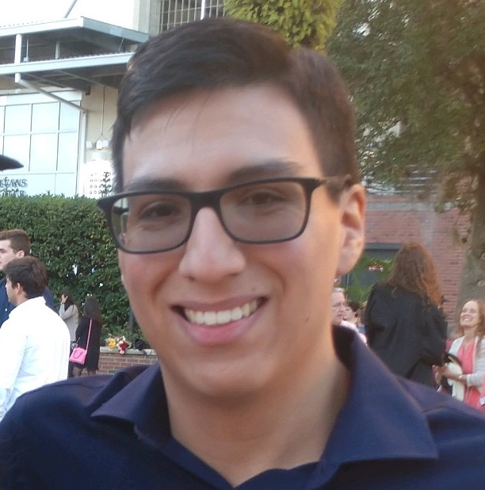

Hi! I am Sebastian Lopez, currently a post-bac researcher at the Astronomy Department of the University of Florida.
I will be starting my Ph.D program in the Fall of 2020 at The Ohio State Universty.
I was born in Colombia but immigrated to the U.S. at a very young age. I grew up in Miami where I graduated from
the School for Advanced Studies Kendall and received my high school degree and A.A. degree from Miami Dade College.
I then majored in Astrophysics and Physics at the University of Florida and graduated in Spring 2020.
I created a documnent my last semester of my undergraduate education (Spring 2020) to give some perspective on how applying to Astronomy Graduate School is like.
I hope you find some use in it and good luck in your application process!
The document is attached here.